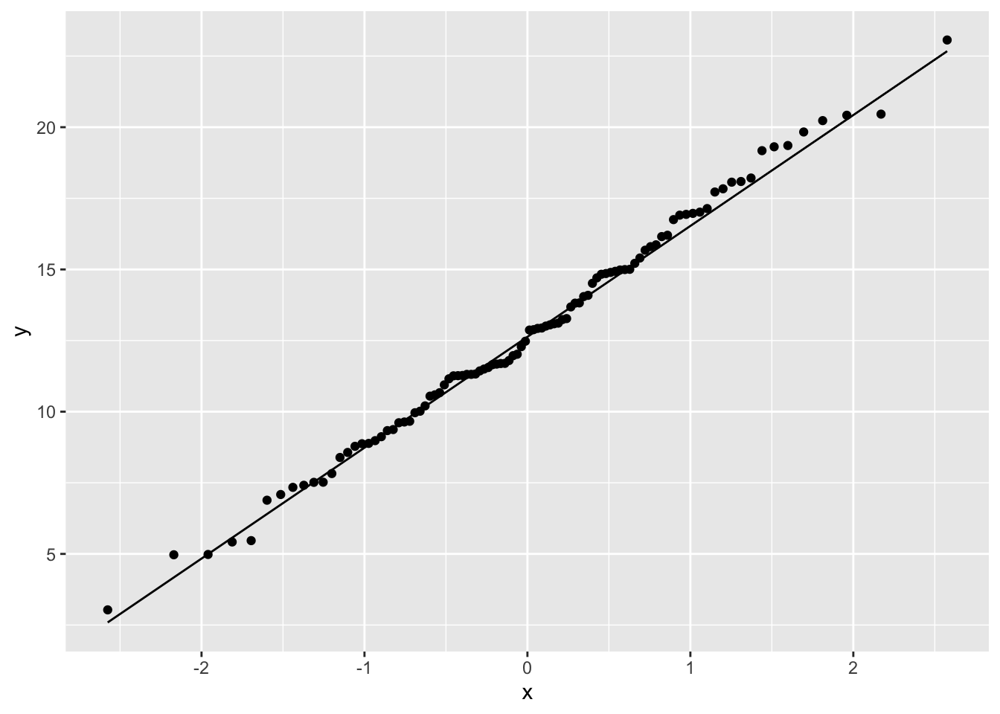

# remember to insert your actual user name
titanic_data <- read.csv("biol220_class/students/username/data/titanic.csv" )8 The normal distribution and sample means
8.1 Goals
- Visualize properties of the normal distribution.
- Understand the Central Limit Theorem.
- Calculate sampling properties of sample means.
- Decide whether a data set likely comes from a normal distribution
8.2 Learning the Tools
This week we will mainly focus on some exercises to better understand the nature of the normal distribution. We will also learn a couple of tools that help us decide whether a particular data set is likely to have come from population with an approximately normal distribution.
Many statistical tests assume that the variable being analyzed has a normal distribution. Fortunately, many of these tests are fairly robust to this assumption—that is, they work reasonably well even when this assumption is not quite true, especially when sample size is large. Therefore it is often sufficient to be able to assess whether the data come from a distribution whose shape is even approximately normal (the bell curve).
A good way to start is to simply visualize the frequency distribution of the variable in the data set by drawing a histogram. Let’s use the age of passengers on the Titanic for our example.
Remember we can use ggplot() to draw histograms.
ggplot(titanic_data, aes(x = age)) +
geom_histogram(binwidth = 5)Looking at this histogram, we see that the frequency distribution of the variable is not exactly normal; it is slightly asymmetric and there seems to be a second mode near 0. On the other hand, like the normal distribution, the frequency distribution has a large mode near the center of the distribution, frequencies mainly fall off to either side, and there are no outliers. This is close enough to normal that most methods would work fine.
8.2.1 QQ Plot
Another graphical technique that can help us visualize whether a variable is approximately normal is called a quantile plot (or a QQ plot). The QQ plot shows the data on the vertical axis ranked in order from smallest to largest (“sample” in the figure below). On the horizontal axis, it shows the expected value of an individual with the same quantile if the distribution were normal (“theoretical” in the same figure). The QQ plot should follow more or less along a straight line if the data come from a normal distribution (with some tolerance for sampling variation).
QQ plots can be made in R using a function called geom_qq(). Add geom_qq_line() to draw a line through that QQ plot to make the linear relationship easier to see. The only weird thing about these geom’s is that you need to specify sample in the aes() function.
ggplot(titanic_data, aes(sample = age)) +
geom_qq() +
geom_qq_line()This is what the resulting graph looks like for the Titanic age data. The dots do not land along a perfectly straight line. In particular the graph curves at the upper and lower end. However, this distribution definitely would be close enough to normal to use most standard methods, such as the t-test.
It is difficult to interpret QQ plots without experience. One of the goals of today’s exercises will be to develop some visual experience about what these graphs look like when the data is truly normal. To do that, we will take advantage of a function built into R to generate random numbers drawn from a normal distribution. This function is called rnorm().
The function rnorm() will return a vector of numbers, all drawn randomly from a normal distribution. It takes three arguments:
n: how many random numbers to generate (the length of the output vector)mean: the mean of the normal distribution to sample fromsd: the standard deviation of the normal distribution
For example, the following command will give a vector of 20 random numbers drawn from a normal distribution with mean 13 and standard deviation 4:
rnorm(n = 20, mean = 13, sd = 4) [1] 16.089565 13.000587 14.129256 17.834256 15.405998 15.474539 14.371702
[8] 7.036523 20.769292 10.244759 14.442815 7.150834 11.928705 8.153893
[15] 9.724061 12.578625 10.322787 9.675155 13.121622 11.847377Let’s look at a QQ plot generated from 100 numbers randomly drawn from a normal distribution:
normal_data <- data.frame(Y = rnorm(n = 100, mean = 13, sd = 4))
ggplot(normal_data, aes(sample = Y)) +
geom_qq() +
geom_qq_line()
These points fall mainly along a straight line, but there is some wobble around that line even though these points were in fact randomly sampled from a known normal distribution. With a QQ plot, we are looking for an overall pattern that is approximately a straight line, but we do not expect a perfect line. In the exercises, we’ll simulate several samples from a normal distribution to try to build intuition about the kinds of results you might get.
When data are not normally distributed, the dots in the quantile plot will not follow a straight line, even approximately. For example, here is a histogram and a QQ plot for the population size of various counties, from the data in wright_etal_2017.csv. These data are very skewed to the right, and do not follow a normal distribution at all.
# remember to insert your actual user name
titanic_data <- read.csv("biol220_class/students/username/data/wright_etal_2017.csv" )ggplot(leafsize, aes(x = leafsize_cm2)) +
geom_histogram()ggplot(leafsize, aes(sample = leafsize_cm2)) +
geom_qq() +
geom_qq_line()8.2.2 Transformations
When data are not normally distributed, we can try to use a simple mathematical transformation on each data point to create a list of numbers that still convey the information about the original question but that may be better matched to the assumptions of our statistical tests. We’ll see more about such transformations in chapter 13 of Whitlock and Schluter, but for now let’s learn how to do one of the most common data transformations, the log-transformation.
With a transformation, we apply the same mathematical function to each value of a given numerical variable for individual in the data set. With a log-transformation, we take the logarithm of each individual’s value for a numerical variable.
We can only use the log-transformation if all values are greater than zero. Also, it will only improve the fit of the normal distribution to the data in cases when the frequency distribution of the data is right-skewed.
To take the log transformation for a variable in R is very simple. We simply use the function log(), and apply it to the vector of the numerical variable in question. For example, to calculate the log of age for all passengers on the Titanic, we use the command:
log(titanic_data$age)This will return a vector of values, each of which is the log of age of a passenger.
8.3 Questions
Let’s use R’s random number generator for the normal distribution to build intuition for how to view and interpret histograms and QQ plots. Remember, the lists of values generated by
rnorm()come from a population that truly have a normal distribution.Generate a list of 10 random numbers from a normal distribution with mean 15 and standard deviation 3, using the following command:
normal_data <- data.frame(Y = rnorm(n = 10, mean = 15, sd = 3))Use
geom_histogram()to plot a histogram of these numbers from part a. You will want to changebinwidthfor visual clarity.Plot a QQ plot from the numbers in part a.
Repeat a through c several times (at least a dozen times). For each, look at the histograms and QQ plots. Think about the ways in which these look different from the expectation of a normal distribution and remember that each of these samples comes from a truly normal population.
Repeat the procedures of Question 1, except this time have R sample 250 individuals for each sample. You can use the same command as in Question 1, but now set
n = 250. Do the graphs and QQ plots from these larger samples look more like the normal expectations than the smaller sample you already did? Why do you think that this is?The file “mammals.csv” (in the data folder) contains information on the body mass of various mammal species.
- Use
ggplot()to plot the distribution of body mass, and describe its shape. Does this look like it has a normal distribution? - Use
geom_qq()andgeom_qq_line()to plot a QQ plot for body mass. Does the data fall approximately along a straight line in the QQ plot? If so, what does this imply about the fit of these data to a normal distribution? - Transform the body mass data with a log-transformation. Repeat steps (a) and (b) on the transformed data, does the log-transformation bring the data closer to normal or further from it?
- Calculate the mean of log body mass and a 95% confidence interval for this mean. (You may want to refer back to Lab 4 for the R commands to do this.)
- Use